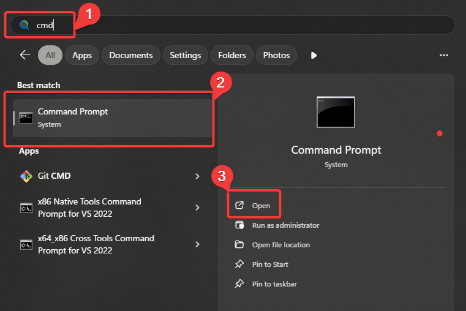
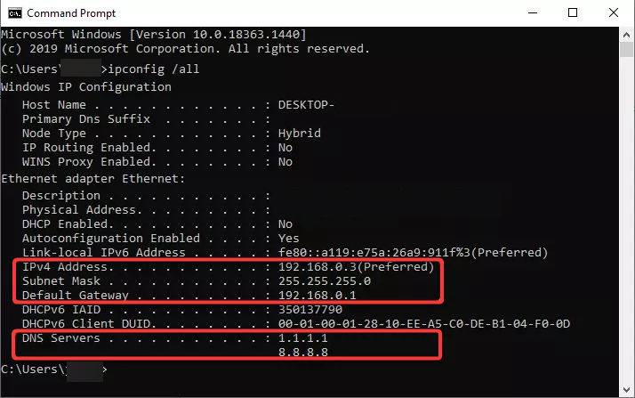
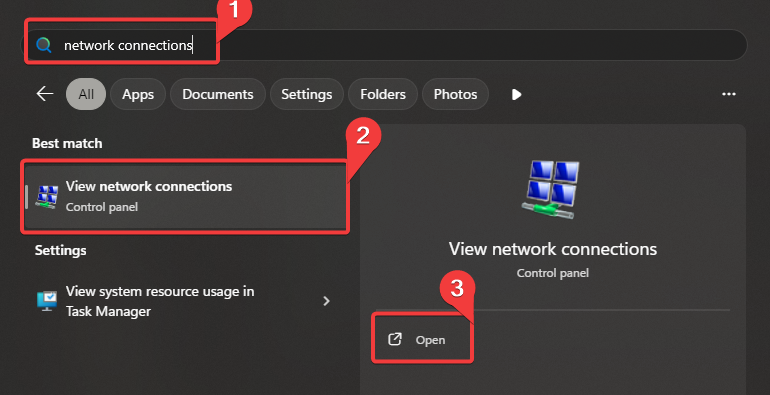
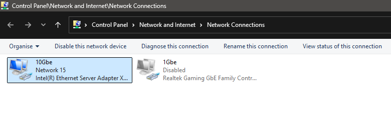
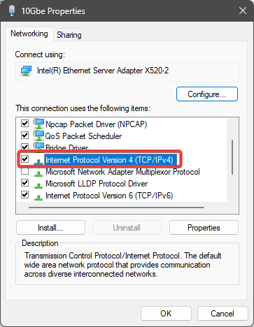
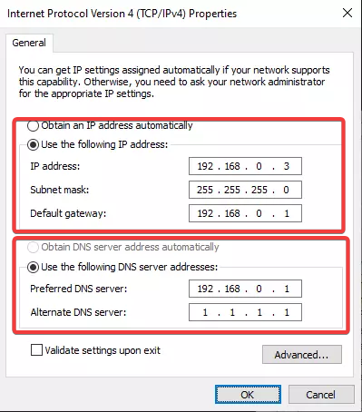

Port Weiterleitung
ACHTUNG
Das weiterleiten von Ports ist ein Risiko.
Durch die Portweiterleitung bist du dir den Risiken bewusst, die mit der Öffnung von Ports in das öffentliche Netz verbunden sind. Daher verlierst du das Recht, BeamMP für alle Schäden haftbar zu machen, die dir oder deinem Haushalt entstehen können.
Wir übernehmen keine Verantwortung für Inhalte auf extern verlinkten Diensten oder Websites.
Wenn du diese Anleitung nicht verstehst, ziehe die Nutzung eines unserer Hosting Partner in Betracht.
Warnung
Bitte stelle sicher, dass dein Router kein 4G/5G-exklusives Gerät ist. Wenn es sich um ein Hybridgerät handelt, wähle später in Abschnitt 3 dieser Anleitung unbedingt den kabelgebundenen Adapter aus!
So richtest du die Portweiterleitung ein.
Das Erstellen einer Portweiterleitungsregel erfordert einige detaillierte Netzwerkbegriffe. Mach dir während des Vorgangs Notizen.
Diese Anleitung besteht aus vier Hauptschritten.
Eine Kurzanleitung. (Eine ausführlichere Anleitung findest du weiter unten.)
-
Weisen Sie Ihrem Computer oder Ihren Geräten eine statische IP-Adresse zu
ies ist erforderlich, um zu verhindern, dass sich die IP deines Geräts ändert und die Portweiterleitung funktioniert.
-
Melde dich bei deinem Router an
Dies kann normalerweise durch Suchen der IP des „Standard-Gateways“ erfolgen, die gefunden werden kann, wenn
ipconfigin einer Eingabeaufforderung ausgeführt und in die Adressleiste eines Webbrowsers eingegeben wird. -
Leite Ports an deinen Computer weiter
Suche in der Weboberfläche Ihres Routers nach dem Abschnitt zur Portweiterleitung. Bei den meisten Routern findet man dies unter „Netzwerk“, „Erweitert“ oder „LAN“.
-
Teste, ob dein Port richtig weitergeleitet wird
Verwenden Sie ein Tool wie CheckBeamMP, um zu testen, ob die Regel funktioniert.
Die ausführliche Anleitung
1. Zuweisen einer statischen IP-Adresse
Methode 1: Einrichten einer statischen IP-Adresse mithilfe von DHCP-Reservierungen
Eine weitere Möglichkeit, eine statische IP-Adresse in einem lokalen Netzwerk einzurichten, ist die DHCP-Reservierungsfunktion des Routers. Da nicht alle Router über diese Funktion verfügen, ist sie möglicherweise nicht für dich geeignet. Suche im Internet nach einer Anleitung für dein Routermodell.
Wenn du dies geschafft hast, fahre direkt mit Schritt 2 fort
Methode 2: Zuweisen einer statischen IP in Windows
1.1. Finde deine aktuelle IP-Adresse, Gateway und DNS-Server:
Bevor wir eine statische IP-Adresse einrichten können, benötigen wir deine aktuellen Netzwerkeinstellungen. Notiere diese, halte also ein Notepadfenster bereit. Für diesen Schritt verwenden wir die Eingabeaufforderung.
Öffne die Eingabeaufforderung. Die drei wichtigsten Möglichkeiten sind:
- Drücke die Windows-Taste, gebe dann „cmd“ ein und drücke die Eingabetaste, wenn „Eingabeaufforderung“ hervorgehoben ist.

Sobald du dich in der Eingabeaufforderung befindest, führe den folgenden Befehl aus:
Du wirst eine Menge an Daten sehen. Wenn du virtuelle oder mehrere Netzwerkadapter verwendest, werden noch mehr Daten angezeigt. Bei der Installation von Hyper-V oder Docker werden häufig viele virtuelle Adapter angezeigt.

Es wird empfohlen, für den Betrieb dieses Servers eine kabelgebundene Netzwerkverbindung zu verwenden. Eine drahtlose Verbindung funktioniert jedoch auch. Suche in dieser Liste nach einem Adapter mit aktiver Internetverbindung. Scrolle durch die Liste und suche einen Adapter mit zugewiesenem Standard-Gateway. Viele virtuelle Adapter verfügen über kein Standard-Gateway.
Nachfolgend findest du Beispiele für lokale IPv4-Adressen, die mindestens einer der Adapter haben sollte. Notiere dir die Informationen deines Adapters.
- 192.168.xx
- 10.xxx
- 172.16.xx – 172.31.xx
Subnetzmaske (höchstwahrscheinlich 255.255.255.0) Standard-Gateway (höchstwahrscheinlich 192.168.0.1 oder 192.168.1.1)
!!! Info „Beachte“ BeamMP unterstützt derzeit kein IPv6 zum Hosten eines Servers.
1.2. Adaptereinstellungen ändern
Nun müssen wir die Einstellungen deines Netzwerkadapters ändern, damit dein PC die aktuelle IP-Konfiguration behält. So gelangst du am schnellsten zu den Netzwerkeinstellungen:
- Drücke einmal auf die Windows-Taste
- Gebe den Ausdruck „Netzwerkverbindungen“ ein, bis „Netzwerkverbindungen anzeigen“ angezeigt wird.
- Drücke die Eingabetaste

Du solltest eine Liste der Netzwerkverbindungen auf deinem Computer sehen. Wenn du einen Hyper-V oder Docker installiert hast, kann es viele davon geben. Suche nach Adaptern, die nicht „Hyper-V“ heißen.

Klicke mit der rechten Maustaste auf deinen Adapter und wähle Eigenschaften. Wenn Internet Protocol Version 4 nicht aktiviert ist, handelt es sich um den falschen Adapter. Wähle einen anderen.

Doppelklicken Sie auf Internet Protocol Version 4 Ändern Obtain an IP address automatically beziehen in Use the following IP address .
Fülle die IP-Adresse, Subnetzmaske, das Standard-Gateway und den bevorzugten DNS-Server mit den Informationen aus der Eingabeaufforderung (ipconfig /all) aus.
Alternativ kannst du anstelle deines DNS-Servers entweder die CloudFlare- oder Google-DNS-Server verwenden:
- CloudFlare DNS: 1.1.1.1, 1.0.0.1
- Google DNS: 8.8.8.8, 8.8.4.4

Klicke auf „OK“ und dann erneut auf „OK“. Dein Adapter ist nun von DHCP auf statisch umgestellt. Surfe im Internet, um sicherzustellen, dass du weiterhin eine Internetverbindung hast. Falls nicht, ändere deine Einstellungen wieder auf „IP-Adresse automatisch beziehen“ und versuche die nächste Methode.
2. Melde dich bei deinem Router an
Da du jetzt eine statische IP-Adresse auf deinem Gerät hast, kannst du den Port für BeamMP weiterleiten!
Zunächst müssen wir uns bei deinem Router anmelden. Zuvor hast du dir das Standard-Gateway notiert. Das ist die IP-Adresse deines Routers.
Die meisten Router verwalten ihre Geräte über eine lokal gehostete Webseite. So zeigst du das Menü und die Einstellungen deines Routers an:
- Öffne einen Webbrowser. Firefox, Chrome oder Edge sollten problemlos funktionieren.
- Gebe in der Adressleiste deine Standard-Gateway-IP-Adresse ein, z. B. 192.168.0.1 oder 192.168.1.1, und drücke die Eingabetaste
Du solltest nun den Anmeldebildschirm deines Routers sehen. Nicht alle Router erfordern eine Anmeldung, die meisten jedoch schon. Du benötigst den Benutzernamen und das Passwort deines Routers. Wenn du dich noch nie angemeldet hast, sind der Benutzername und Ihr Passwort höchstwahrscheinlich auf die werkseitigen Standardwerte eingestellt oder stehen in manchen Fällen auf einem Aufkleber auf Ihrem Router.
Einige der gebräuchlichsten werkseitigen Benutzernamen und Passwörter sind hier aufgeführt:
| Username | Passwort |
|---|---|
| admin | admin |
| admin | password |
| {leer} | admin |
| {leer} | password |
Probiere verschiedene Kombinationen aus „Administrator“, „Passwort“ und lasse die Einträge leer. Lasse den Wert bei „Leer“ leer.
3. Port weiterleitungsregeln erstellen!
3.1. Suche das Weiterleitungsmenü
Suche den Abschnitt zur Portweiterleitung in der Weboberfläche deines Routers. Navigiere in deinem Router, indem du auf die Registerkarten oder Links oben oder links auf jeder Seite klickst. Die meisten Router listen den Abschnitt zur Portweiterleitung unter Netzwerk, Erweitert oder LAN auf. Suche nach den folgenden Schlüsselwörtern, um ihn zu finden:
- Portweiterleitung
- Weiterleitung
- Portbereichsweiterleitung
- Virtuelle Server
- Apps & Spiele
- Erweiterte Einrichtung/Einstellungen
- NAT
3.2. Gebe die Details ein
Sobald du den Bereich für die Portweiterleitung gefunden hast, kannst du die erforderlichen Informationen eingeben. Dein Router bietet dir die Möglichkeit, die weiterzuleitenden Ports und die Ziel-IP-Adresse für diese Portweiterleitung einzugeben. Wenn dein Router sowohl interne als auch externe Ports angibt, achte darauf, dass diese identisch sind.
BeamMP erfordert sowohl UDP- als auch TCP-Port 30814 (es sei denn, du hast diesen in deiner ServerConfig.toml geändert).
!!!! info "Hinweis" Der Standardport ist 30814. Du kannst aber auch andere Ports größer als 1024 und kleiner als 65535 wählen. Notiere dir deine Wahl, falls diese nicht 30814 ist. Du musst sowohl TCP als auch UDP weiterleiten. Es wird empfohlen, den Standardport beizubehalten, da dieser höchstwahrscheinlich nicht von einem anderen Dienst auf Ihrem PC verwendet wird. Wenn du jedoch mehrere Server auf einem Rechner hostest, benötigt jeder Server einen anderen Port. Server 1: 30814, Server 2: 30815 zum Beispiel.
Auf einigen Routern muss man möglicherweise zwei Regeln erstellen, eine für UDP und eine für TCP, während andere praktisch sind und dir beides mit einer einzigen Regel ermöglichen!
Die meisten Router verfügen über eine Schaltfläche „Speichern“ und bei manchen Routern ist ein Neustart oder Reboot erforderlich, damit die Änderungen wirksam werden.
4. Zeit zum Testen!
Es gibt verschiedene Möglichkeiten, die Verbindung zu testen.
Wir empfehlen die Verwendung unseres Tools CheckBeamMP, da dieses auf BeamMP-spezifische Probleme und Protokolle testet.
Dies kann durch die Abfrage deiner öffentlichen IPv4-Adresse erfolgen. Auch hierfür gibt es verschiedene Möglichkeiten. Die häufigste Methode ist die Nutzung der Website whatsmyip.org . Diese einfache Website zeigt deine öffentliche IP-Adresse an. Du solltest nach einer IP-Adresse im Format xxx.xxx.xxx.xxx suchen.
Besuche den folgenden Link und ersetzen Sie "IP" durch deine tatsächliche IPv4-Adresse und "Port" durch den Port deines Servers. Achte darauf, keine Leerzeichen zu hinterlassen. https://check.beammp.com/api/v2/beammp/ip/port
status: ok
Wenn du die obige Ausgabe erhältst, kannst du des jetzt deinem Server beitreten! Es gibt zwei Möglichkeiten, beizutreten: entweder direkt mit den Daten, die du in probablyup eingegeben hast, oder, wenn dein Server auf „öffentlich“ eingestellt ist, über die Serverliste. Da du einen Server vor Ort hostest, verwenden 127.0.0.1 (localhost), wenn der Server auf demselben PC läuft, auf dem du spielst, oder die LAN-IPv4 des lokalen Computers, auf dem der Server läuft.
status: error
Wenn die Verbindung vollständig fehlschlägt, verwendet dein Anbieter möglicherweise CGNAT (Carrier Grade Network Address Translation). Weitere Informationen findest du unter Wie kann ich auf CGNAT prüfen?, oder öffne ein Server-Support-Ticket auf unserem Discord-Server im Kanal „#support“ und einer unserer Mitarbeiter wird sich um dein Ticket kümmern! Wenn du nur siehst, dass TCP funktioniert und UDP fehlschlägt, überprüfe die Firewall- und Portweiterleitungsregeln erneut.